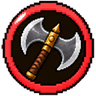
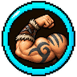
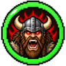

Barbaro
Asce, furia e rabbia
Una classe per personaggio: per cambiarla serve il Reset. Si parte dal primo nodo e dal tronco, poi si sceglie un ramo; si può passare in un ramo vicino una volta sola, e alla fine si prende una sola Abilità Finale.
Primo nodo
+6 vita, +35% danno in mischia, +25% contraccolpo, -15% velocità d'attacco, -25% cure, -75% danno a distanza. Contro i giocatori fa il 20% di danno in meno. Cadendo da più di 8 blocchi prendi il 35% di danno in meno e l'impatto esplode al suolo, colpendo chi ti sta intorno (da 4 a 14 danni: più cadi dall'alto, più fa male). Con le armi a due mani fa il 10% di danno in più. Puoi usare la Protezione fino a II sulle armature.
Tronco
I tuoi colpi in mischia fanno il 2,5% di danno in più. Da Barbaro, con le armi a due mani fai anche il 10% di danno in mischia in più.
+2 vita massima (1 cuore).
Rami

I tuoi colpi in mischia fanno il 2,5% di danno in più.
I tuoi colpi ignorano il 5% dell'armatura del bersaglio.
Con le asce fai il 10% di danno in più.
Nodo proprio del ramo: Con un'ascia a due mani, il primo colpo dopo 3 secondi senza colpire stordisce il nemico per mezzo secondo. Prenderlo chiude i punti d'incontro: resti nel tuo ramo.
Le asce colpiscono anche i nemici accanto con il 40% del danno.
Strada Boia. I colpi critici con l'ascia rallentano il nemico per 2 secondi.
Strada Boia. Tasto destro in aria con un'ascia per lanciarla fino a 20 blocchi: fa il danno dell'ascia +15% (incantesimi compresi). Non torna indietro: va raccolta.
Strada Spaccascudi. I colpi d'ascia disattivano lo scudo dei nemici per 3 secondi in più.
Strada Spaccascudi. Ogni 10 secondi il primo colpo d'ascia fa il 60% di danno in più.

Corsa: +5%.
I tuoi colpi in mischia fanno il 2,5% di danno in più.
Senza elmo e corazza ti muovi il 5% più veloce.
Nodo proprio del ramo: Ogni nemico che uccidi ti dà il 10% di velocità d'attacco in più per 5 secondi, fino a 3 volte. Prenderlo chiude i punti d'incontro: resti nel tuo ramo.
Ogni colpo a segno ti cura del 3% del danno che fai.
Strada Carica. Dopo 2 secondi di corsa il primo colpo fa il 25% di danno in più.
Strada Carica. Per 10 secondi non vieni rallentato, né spinto via né lanciato in aria, corri il 50% più veloce e i tuoi passi sono più pesanti. Ricarica 90 s.
Strada Berserker. Senza elmo e corazza attacchi il 10% più veloce.
Strada Berserker. Quando scenderesti a zero vita resti a mezzo cuore per 4 secondi. Una volta ogni 5 minuti.

I tuoi colpi in mischia fanno il 2,5% di danno in più.
Attacchi il 3% più veloce.
Quando prendi danno hai il 20% di probabilità di avere Forza I per 3 secondi.
Nodo proprio del ramo: Più vita perdi, più colpisci forte: fino al 20% di danno in più sotto il 30% di vita. Prenderlo chiude i punti d'incontro: resti nel tuo ramo.
Entri in rabbia per 15 secondi: prendi il 20% di danni in meno da armi e frecce e ogni colpo in mischia fa 2 danni in più. Ricarica 3 minuti.
Strada Inarrestabile. Durante la Rabbia non vieni rallentato né spinto via.
Strada Inarrestabile. Ogni nemico che uccidi durante la Rabbia la allunga di 3 secondi.
Strada Sanguinario. In Rabbia i tuoi colpi fanno sanguinare: 1 danno al secondo per 3 secondi.
Strada Sanguinario. Entrando in Rabbia i mob vicini si girano verso di te e hanno Debolezza per 5 secondi.
La tua armatura vale il 10% in più contro i mob (non contro i giocatori).
Cure ricevute: +5%.
+1 armatura naturale, che vale anche senza armatura addosso.
Nodo proprio del ramo: I compagni di gilda entro 8 blocchi fanno il 5% di danno in più. Prenderlo chiude i punti d'incontro: resti nel tuo ramo.
Fuori dal combattimento rigeneri mezzo cuore ogni 4 secondi.
Strada Orso. +2 armatura naturale.
Strada Orso. Chi ti colpisce in mischia viene rallentato per 1 secondo.
Strada Lupo. +10% danno se un compagno è entro 6 blocchi da te.
Strada Lupo. Dopo che uccidi un nemico, i compagni di gilda vicini rigenerano mezzo cuore ogni 3 secondi per 10 secondi.
Punti d'incontro
Nodi condivisi tra due rami vicini: da qui si può saltare nell'altro ramo.
Ogni 5 colpi a segno, il successivo fa il 50% di danno in più. È l'alternativa al nodo proprio del ramo: da qui continui nel tuo ramo o passi in quello accanto, una volta sola in tutto l'albero.
Tu e i compagni entro 10 blocchi avete Forza I per 10 secondi, e i mob vicini Debolezza. Ricarica 3 minuti. È l'alternativa al nodo proprio del ramo: da qui continui nel tuo ramo o passi in quello accanto, una volta sola in tutto l'albero.
Quando sei sotto metà vita prendi il 10% di danni in meno. È l'alternativa al nodo proprio del ramo: da qui continui nel tuo ramo o passi in quello accanto, una volta sola in tutto l'albero.
Abilità Finali
Se ne sceglie una sola.
Lanci un'ascia enorme, grande tre volte una normale, che vola girando in orizzontale fino a 20 blocchi e torna nelle tue mani come un boomerang. Chi colpisce perde una parte della vita che ha in quel momento (il 30% della vita che ha in quel momento, al massimo 40 danni sui boss; più vita ha, più danno prende) e può sanguinare (2 danni al secondo per 4 secondi). Ricarica 30 secondi.
Senza nessun pezzo di armatura addosso (solo l'arma) fai il 100% di danno in più contro i mob e il 50% in più contro i giocatori.
Per 12 secondi ogni tuo colpo in mischia scuote il terreno: i nemici entro 3 blocchi prendono metà del danno e vengono spinti via. Appena lo attivi, il terreno attorno a te si apre in un terremoto per 3 secondi (5 danni ogni secondo e un quarto). Ricarica 5 minuti.